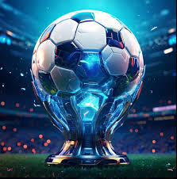

Al llarg de la història, el futbol ha estat escenari de moments inoblidables que han marcat generacions. Els partits històrics són aquells que, per la seva intensitat, significat o resultat, han transcendit el camp i han deixat una empremta inesborrable en la memòria col·lectiva dels aficionats. Des de remuntades inesperades fins a derbis carregats de rivalitat, cada partit té una història única que ens ajuda a comprendre per què el futbol desperta tantes emocions. Explorarem alguns dels partits més emblemàtics que han definit el rumb d'aquest esport i el seu impacte social.
